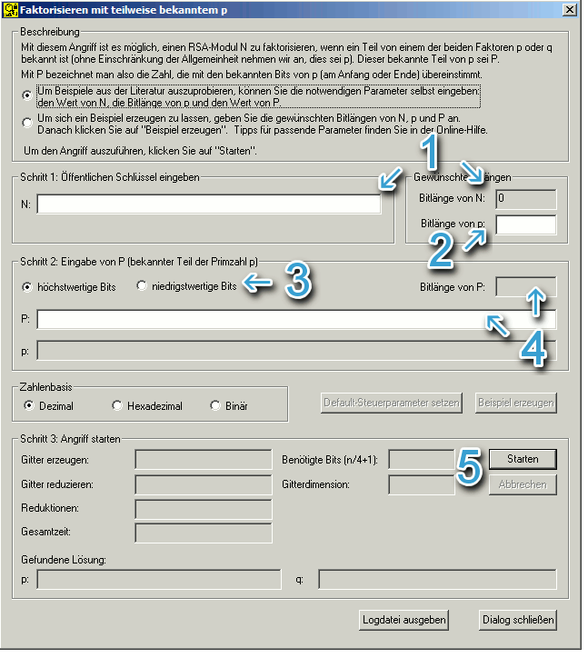
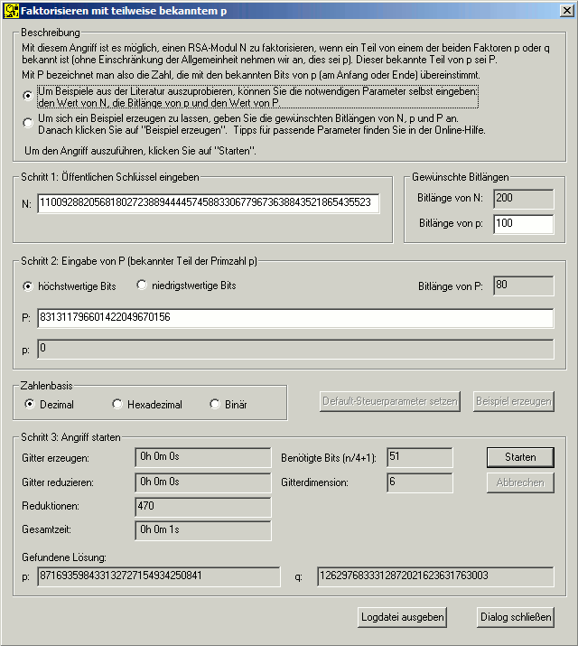

Der Dialog zur Faktorisierung bei teilweise
bekanntem p bietet zwei verschiedene Herangehensweisen, die im oberen Fensterteil
ausgewählt werden können:
1. Man gibt selbst den RSA-Modulus N
, die Bitlänge von p
und den bekannten Teil P
von p
ein.
2. Man wählt die Bitlänge von N
und die Bitlänge von p
und lässt sich ein Beispiel erzeugen.

Durchzuführende Schritte:
Abhängig von der oben genannten Aus wahl muss nun entweder
N selbst oder die Bitlänge von
N angegeben werden.
Die Auswahl "Zahlenbasis" ermöglicht es, die Zahlendarstellung
von N,
p und P
zu ändern.
In beiden Fällen muss die Bitlänge von p
eingegeben werden (für dieses Verfahren muss man die
Bitlänge von p
exakt kennen!).
Anschließend wählt man aus, ob die höherwertigen oder die
niederwertigen Bits von p
bekannt sein sollen.
Abhängig vom gewählten Modus gibt man nun entweder den bekannten
Teil von p
selbst ein, oder man gibt die Anzahl der übereinstimmenden Bits ein und
klickt auf "Beispiel erzeugen". Beachte:
Wenn man P
selbst eingibt, muss dies bei z.B. 40 mit
p übereinstimmenden Bits in der Binärschreibweise
identisch sein. Deshalb sollten Sie, wenn Sie Option 1 wählen und alles
selbst eingeben, zwischendurch auf die Binär- oder Hexadezimal-Anzeige
umschalten, um zu kontrollieren, dass die Bits auch identisch sind!
Nun kann mit dem Button "Starten" der Angriff gestartet
werden.
Die Gruppierung "Angriff" informiert darüber, wie viel
Zeit im laufenden Angriff verstrichen ist und wie viele Gitterreduktionen durchgeführt
wurden. Nach Beendigung des Angriffs werden die gefundenen Faktoren p
und q ausgegeben.
Darüber hinaus wird hier auch die Anzahl der benötigten Bits (n
/ 4+1) angegeben, die in Abhängigkeit von
N berechnet wird. Daraus ergibt sich auch die Dimension des
zu reduzierenden Gitters: Je mehr Bits eines der Faktoren bekannt sind, desto
kleiner kann das Gitter sein.
Beispiel:
Angriff auf einen RSA-Modulus N mit der Bitlänge 200:
Vorgehen nach Option 1:
Der Angreifer gibt den ihm bekannten Wert N = 1100928820568180272388944445745883306779673638843521865435523
ein.
In den meisten Fällen haben die beiden Faktoren genau halb soviele
Bits wie N
. So auch hier:
Bitlänge von p
: 100
Der Angreifer wählt, dass er die höchstwertigen Bits (also die
linken) von p
kennt.
Er gibt P = 831311796601422049670156
ein.
Mit einem Klick auf "Start" beginnt der Angriff.
Dialog zum Beispiel:

Bemerkungen:
Wieviel des Faktors p
von N bekannt
sein muss, hängt nicht von der Größe von
p sondern nur von der Größe von N
ab. Es müssen bei einem
N mit n
Bit Länge mindestens (n/4)+1
Bit von p
bekannt sein. Dabei ergibt soch ein Gitter der Gitterdimension
n, was ab einer größe von
n = 128 schwer lösbar ist.
Wenn sich P
und p in
der Dezimaldarstellung oder der Hexadezimaldarstellung teilweise entsprechen,
bedeutet das nicht, dass sie sich auch in der Binärdarstellung exakt
entsprechen. Dies ist jedoch die Grundvoraussetzung für den Angriff.